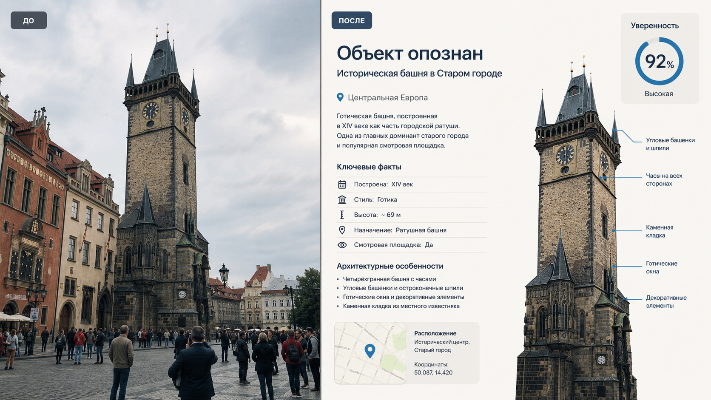

Промтзилла
Этот промт помогает превратить неясное фото из поездки в понятную справку: что за объект в кадре, где он может находиться и по каким деталям ИИ сделал вывод.

Пошаговая инструкция
- 1Выбери фото, где хорошо видны фасад, силуэт, окружение, таблички или характерные детали объекта.
- 2Открой инструмент определения достопримечательности по фото и загрузи изображение.
- 3Скопируй промт ниже и попроси отделить уверенные признаки от предположений.
- 4Сравни ответ с картами, официальными сайтами или путеводителями, если нужна точность.
- 5Попроси ИИ оформить результат как короткую карточку для путешествия или поста.
Пример результата
На обложке показан типичный сценарий: слева обычное исходное фото, справа результат, который можно получить после анализа через инструмент определения достопримечательности по фото.
Промт
RU
Определи достопримечательность или объект на фото. Дай ответ структурировано: 1. Самая вероятная версия: название объекта, город и страна. 2. Уровень уверенности в процентах. 3. Какие визуальные признаки помогли: архитектура, форма, материалы, окружение, таблички, ландшафт. 4. Две альтернативные версии, если точность не 100%. 5. Краткая историческая справка простым языком. 6. Интересные факты, которые можно проверить. 7. Что сфотографировать дополнительно, чтобы уточнить ответ. Не выдавай предположения за факт. Если объект вымышленный, похож на несколько мест или фото слишком обрезано, честно напиши об этом.
EN
Identify the landmark or object in the photo. Structure the answer: 1. Most likely version: object name, city, and country. 2. Confidence level in percent. 3. Visual clues used: architecture, shape, materials, surroundings, signs, landscape. 4. Two alternative versions if certainty is not high. 5. A short historical note in simple language. 6. Interesting facts that can be verified. 7. What extra photo angles would help confirm the answer. Do not present assumptions as facts. If the object is fictional, resembles several places, or the photo is too cropped, say that clearly.
Важно
Распознавание достопримечательностей по фото вероятностное: похожие здания, копии памятников и туристические ракурсы могут сбивать модель. Для публикации фактов сверяй результат с официальными источниками.
Теги